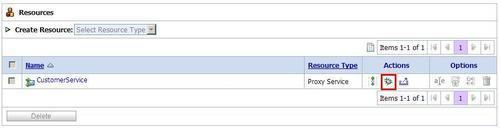
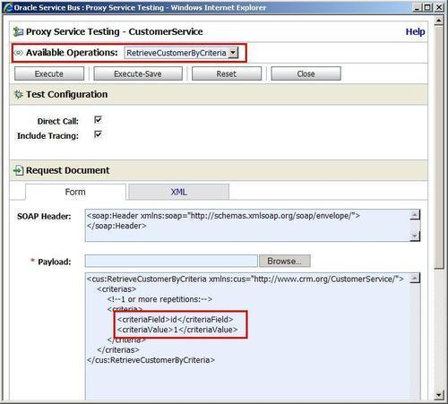
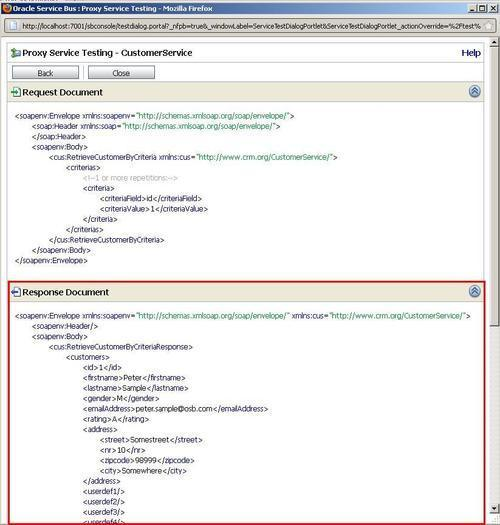
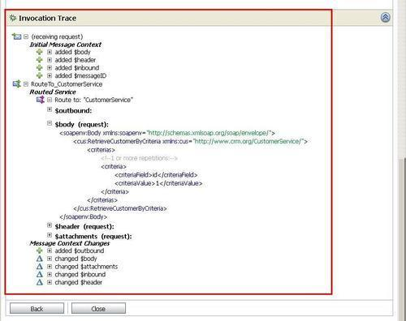

With the OSB configuration deployed successfully to our OSB server, it's time to test it. This recipe will show the most basic way to test, using the OSB console. This is good enough for some initial test but in the long term something more repeatable is necessary. One alternative option is using soapUI, which will be covered in the next recipe.
In the OSB console, perform the following steps:



ID = 1) information is being returned by the OSB service.
Due to the fact that the interface of the proxy service is clearly defined through the WSDL, the OSB console is capable of showing us a sample test message in the Payload field. If we have a proxy service without a WSDL, then testing that service will still be possible through that window, but there will no longer be a sample message shown, as the OSB console does not know about the structure.
The testing capabilities offered by the OSB console are good for some initial tests or if the execution trace is of value, possibly for debugging if using the graphical debugger is not an option. The limitation of the OSB console for testing is clearly that there is no way to persist a test case to be able to run it again later. By that it's also not possible to automate and repeat testing, for example, to start tests inside a nightly build. For that, soapUI, which will be shown in the next recipe, is much better suited.